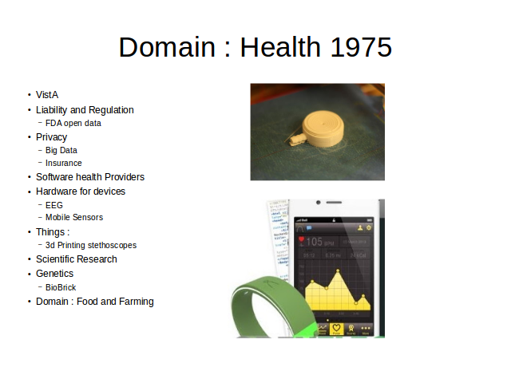

First page Back Continue Last page Overview Text

Notes:
Software :
Openqrs
VA VistA
http://www.openhealth.org/
https://sourceforge.net/directory/business-enterprise/enterprise/medhealth/os:linux/
https://en.wikipedia.org/wiki/List_of_open-source_health_software
http://p2pfoundation.net/Product_Hacking#Health
Devices
https://www.cooking-hacks.com/documentation/tutorials/ehealth-biometric-sensor-platform-arduino-raspberry-pi-medical
https://github.com/GliaX/Stethoscope
https://github.com/AngelSensor/angel-sdk
https://www.youtube.com/watch?v=nPpV_J2yvNU
Big Data Insurance
http://www.computerworld.com/article/2911594/insurance-company-now-offers-discounts-if-you-let-it-track-your-fitbit.html
http://nursingassistantguides.com/2009/50-successful-open-source-projects-that-are-changing-medicine/
https://open.fda.gov/